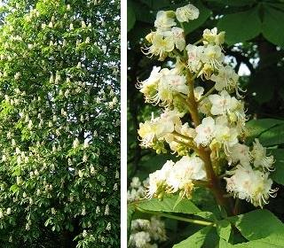
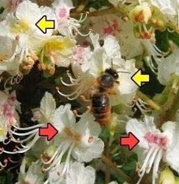

Die Bäume sehen dann aus wie mit Kerzen geschmückt. Daher nennen wir den Blütenstand 'Kerze'.


Die weißen Blüten mit gelben Flecken enthalten Nektar und locken Bienen an. Die Bienen bestäuben die Blüten.
Nach der Bestäubung werden die Flecken rot.